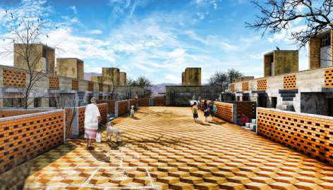
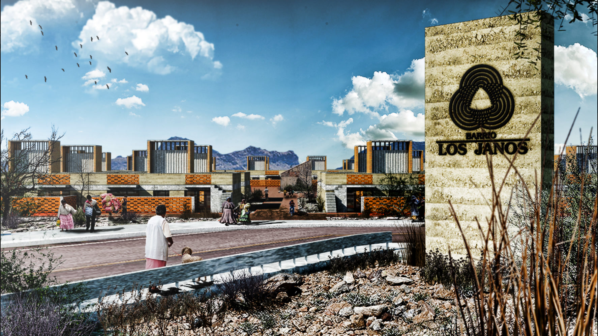
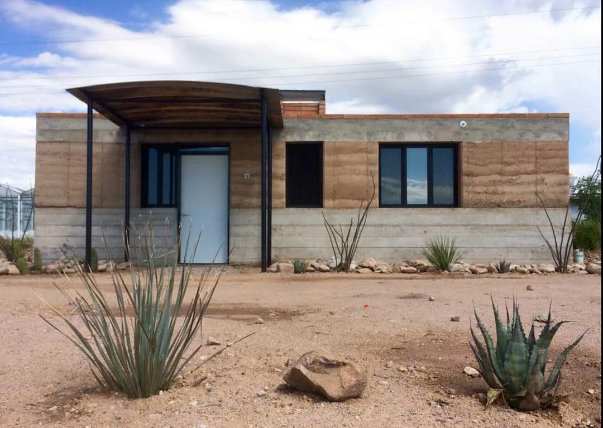
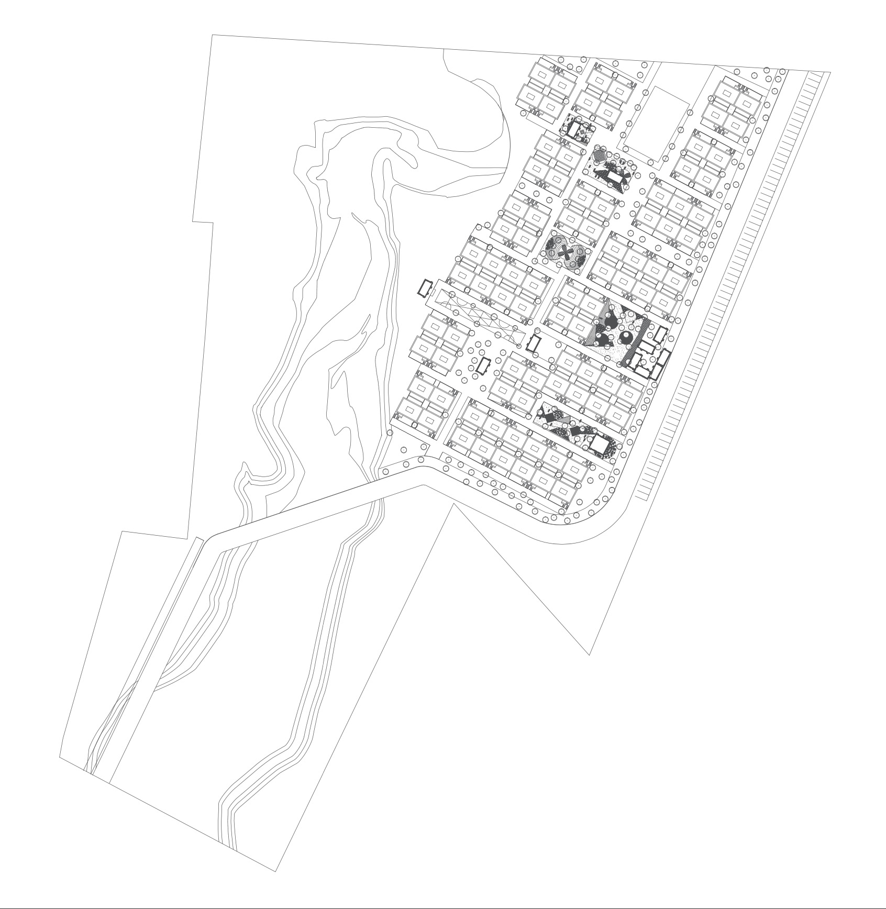
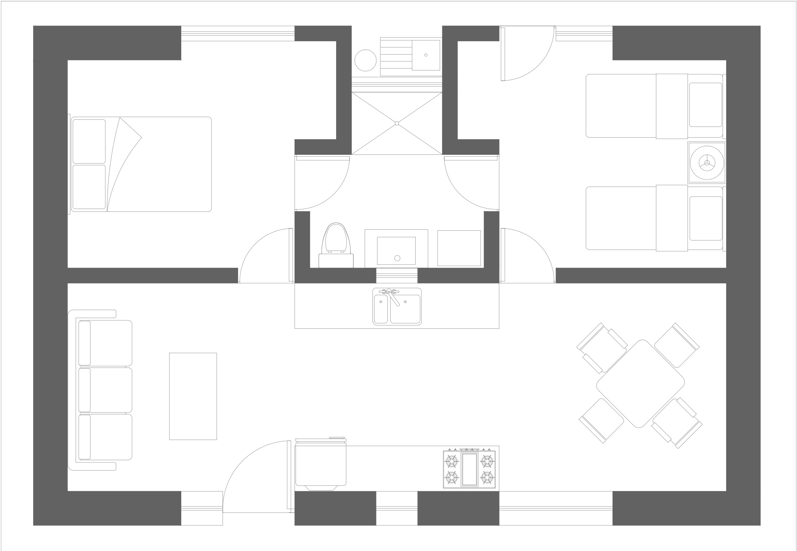

Los Janos, 2015. Near the Mexico–USA border, an international agricultural company commissioned a village masterplan with houses, community centers and sports.

A village masterplan with houses, community centers and sports.
Commissioned by an international agricultural company near the Mexico–USA border.
Near the border of Mexico and the USA, an international agricultural company commissioned the masterplan for a village.
The plan includes houses, community centers and sports.



